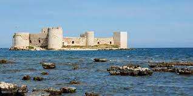
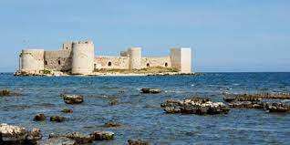

Since the city has been a crossroads for centuries, the local culture is a medley of civilizations. Mersin has a State Opera and Ballet, the fourth in Turkey after Istanbul, İzmir and Ankara. Mersin International Music Festival was established in 2001 and takes place every October.
The photography associations Mersin Fotoğraf Derneği (MFD) and Mersin Olba Fotoğraf Derneği (MOF) are amongst the most popular and active cultural organizations in the city. Some cultural activities are sponsored by the İçel Sanat Kulübü (i.e. Art Club of Mersin) and Mediterranean Opera and Ballet Club.
There are six museums within the Mersin's urban area; Mersin Museum, Mersin Atatürk Museum, Mersin Naval Museum, Mersin State Art and Sculpture Museum, Mersin Urban History Museum, Mersin Water Museum